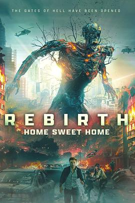

3.7
甜蜜之家：重生
Home Sweet Home: Rebirth
2025
泰国
评分 3.7
导演:
Alexander Kiesl / Steffen Hacker
演员:
米凯莱·莫罗尼 / 威廉·莫斯里 / 乌拉萨雅·斯帕邦德 / 汪庭欢 / 亚历山大·李 / Dominik Zoeker
类型:
动作,恐怖,悬疑,惊悚,科幻
剧情简介
在曼谷度假的美国侦探杰克带着妻子普朗和女儿露一起踏上热带旅程，原本轻松的氛围在商场一声枪响中骤然瓦解。恐怖分子梅克射出那句“你就是守护者”，爆炸、鲜血、尖叫一下将城市送入驯服不住的地狱边缘。杰克醒来时，发现自己身处一处名为「障境」的樊笼——这是生死之间的幽暗殿堂。与此同时，普朗和露穿行于被恶灵附身的市民群中，从酒店大厅逃至地铁站，再潜入废弃庇护所，只为找到乔装神秘僧侣陈。陈告诉杰克：梅克意图开启地狱之门，而他，正是预言中的“守护者”。挥起圣火枪，他重返尘世，以新的身份潜行在城市末日的废墟中。镜头切换于玻璃映出的城市焰火与地下室机关之间，杰克与梅克在街头楼顶、废墟大厅连续交手，沉没于金属撞击、血液喷溅、僧侣咏唱的混乱交响。普朗在母女情深之外，还要独自面对一座城市的末日焦土。本片视觉依托于暴风骤起的曼谷夜景、镶嵌异界符号的地铁墙壁、被冰冷机械化侵蚀的宗教庙宇，营造出“假期转瞬化为末日闯关”的惊悚体验。与其说这是怪兽出没，不如说是人性守护与恐惧感染的较量：当梅克冷笑着说“我比你爱她还更爱她”，那一刻城市淡然如旧的假象撕裂。最终在血色火盆中，守护者与恶灵的战斗让观众屏息，城市暂获喘息，但画面末尾出现的神秘女子暗示：真正的恐惧，并未关闭。